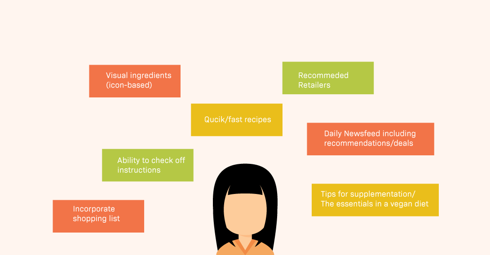
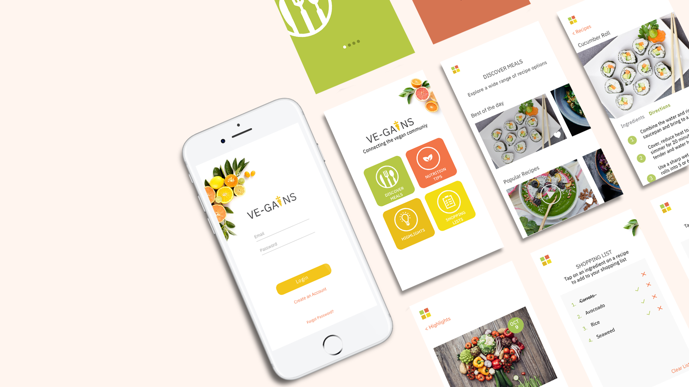

Project Overview: Ve-gains is a mobile app that highlights the advantages of maintaining a healthy vegan diet by providing daily vegan food recipes with step-by-step instructions, tips for supplementation, and nutritional bulletins issued daily.
Roles: User Testing, Wireframing, Branding, UI/UX
Vegains App


The idea primarily evolved from personal experience and
listening to how individuals feel about the vegan lifestyle.
The problem is that transitioning or maintaining a vegan
diet can be intimidating and challenging. I wanted to
create a product that could serve as a guidance tool for
providing resources and essential tips to strive on a vegan diet.
Initial Brainstorming

I started off with some desk research, competitive analysis, and
brainstorming. I began brainstorming what type of features would
be useful for users. I also spoke to a couple of users and asked
what information would be most valuable to them.
Wireframe
For next steps, I did a Lo-fi diagram of the hero flow of the product.
The main flow consists of the user signing up, onboarding, landing on
the discover meals page, and accessing individual recipes.
Site map
After desk research, initial brainstorming, a flow diagram, and user
testing I began to structure a sitemap highlighting
the main features of the application.
Final Stage

Final design screens of VEGAINS, displaying the main navigation,
discover meals landing page, individual recipes with
instructions page, newsfeed, and the shopping list screen.
In Action
The video above showcases two main features including discovering
meals and the shopping list. Both these features go hand-in-hand.
Once the user lands on the discover meals page, they can click on
a recipe and have access to step-by-step instructions and required
ingredients. The user can click on the individual icons ingredients
page to start building a shopping list.